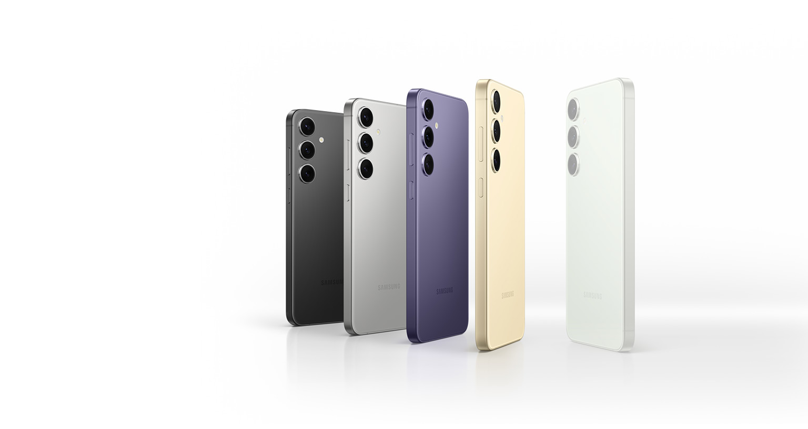

Samsung S24
Postado 04 de Março de 2024 A Samsung acoplou quatro celulares Galaxy S24 Ultra em balões meteorológicos e os lançou à estratosfera para registrar fotos da Terra. A ação faz parte de uma campanha que visa a promover a qualidade das câmeras do smartphone topo de linha, lançado em janeiro pela fabricante sul-coreana. As imagens divulgadas na última sexta-feira (1) representam o oeste dos Estados Unidos e foram capturadas utilizando todas as lentes e sensores da parte traseira do aparelho trabalhando em conjunto.
Leia MaisIphone 15
Postado 04 de Março de 2024
O iPhone 15 é um celular da Apple que tira excelentes fotos, conta com uma tela muito boa e uma bateria que dura bastante. O produto foi lançado no Brasil no final de setembro de 2023.
Leia MaisPostagens Recentes
A Samsung acoplou quatro celulares Galaxy S24 Ultra em balões meteorológicos e os lançou à estratosfera para registrar fotos da Terra.
Leia MaisO iPhone 15 é um celular da Apple que tira excelentes fotos, conta com uma tela muito boa e uma bateria que dura bastante. O produto foi lançado no Brasil no final de setembro de 2023.
Leia Mais